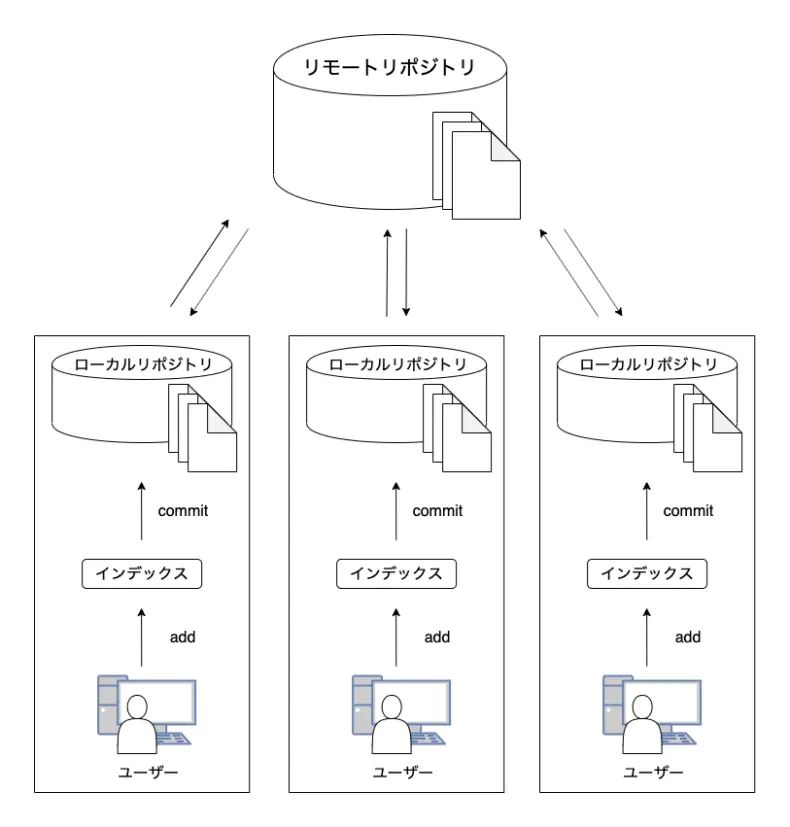

Gitとはファイルのバージョン管理が簡単にできるツールのことです。
・
バージョン管理システムとはデータを「誰が」「いつ」「何を変えたのか」など細かく保存して履歴を追えるようにする仕組みのこと
Gitのバージョン管理システムは
分散型といいます。
・
分散型とは２つのリポジトリを持つシステムのこと

引用画像元サイト：
【初心者向け】Gitとは何なのか。基本用語やその仕組みをまとめています。
・
リポジトリとはファイルやディレクトリをいれて保存する貯蔵庫のこと
２種類あり
・
リモートリポジトリは特定のサーバー上に設置されている
・
ローカルリポジトリはユーザーごとに配置されている手元のマシンで編集できる
このシステムによって
○
古いバージョンに戻す
○
新旧のファイルを一元管理する
○
編集履歴を複数人で管理する
○
複数人で修正した部分を１つにまとめる
ことができます
htmlとはハイパー・テキスト・マークアップ・ランゲージのことで、WEBページを作成するための言語です。
基本的には
WEBページにかかれている文字＝
html
と考えて大丈夫です。
htmlの指示によってWEBページの「文字の大きさ」「文字の色の変更」「下線」などを表現することができます。
タグとは
文字（テキスト）に意味をあたえる印のようなものです。
これによって、文字に意味を与えることができます。
例えば
＜ｈ＞＜/ｈ＞
このタグは見出しを設定します。ｈ１，２，３...と続きます。
＜ｈ１＞見出し１＜/ｈ１＞と入力すると
見出し１
となります。数字を変えると
見出し２
となります。
他にも、リンクを挿入するタグや箇条書きにするタグなどたくさん種類があります。